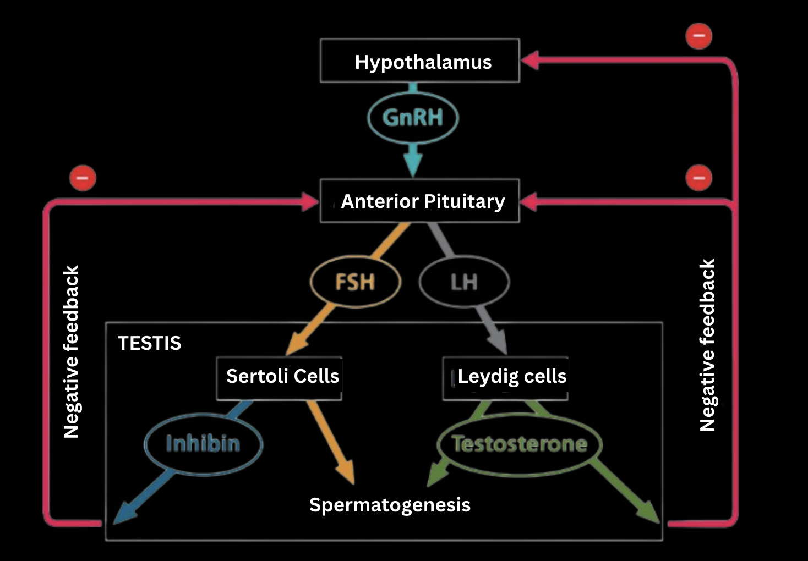
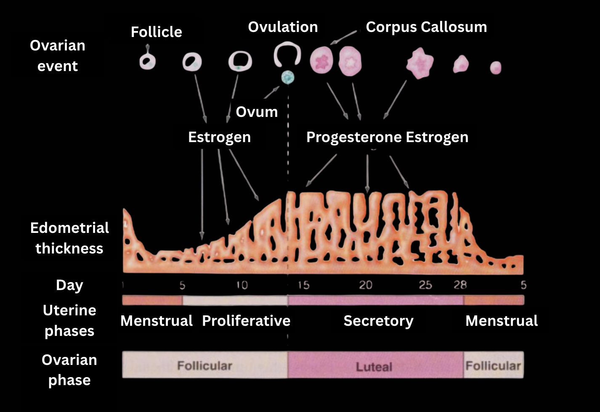

Male
- When directing spermatogenesis, FSH and LH act on two types of cells.
- FSH stimulates Sertoli cells, located within seminiferous tubules, to nourish developing sperm.
- LH causes Leydig cells, scattered in connective tissue between the tubules, to secrete testosterone and other androgens which promote spermatogenesis.
- Two negative-feedback mechanisms control sex hormone production in males:
- Testosterone regulates blood concentration of GnRH, FSH and LH through inhibitory effects on the hypothalamus and anterior pituitary.
- Inhibin, a hormone produced in Sertoli cells in males, acts on the anterior pituitary gland to reduce FSH secretion.
- Leydig cells have additional functions beyond testosterone production. They also secrete small quantities of many other hormones and regulators, including oxytocin, renin, angiotensin, corticotropin-releasing factor, growth factors and prostaglandins.

Female
- While sperm is continuously produced in males, in females, two closely linked reproductive cycles exist.
- Ovarian cycle - defines follicle maturation and release once per cycle. It is divided into two phases.
- Follicular - the ovarian cycle begins when the hypothalamus releases GnRH, which stimulates the anterior pituitary to secrete small amounts of FSH and LH. FSH (as the name implies) stimulated follicle growth, aided by LH, and the cells of the growing follicles start to make estradiol. The low concentration of estradiol inhibits the secretion of pituitary hormones, keeping LH and FSH sparse. When the estradiol, secreted by the follicle, concentration begins to rise rapidly, so do the FSH and LH concentrations, because while low concentrations inhibit the anterior pituitary, high concentrations stimulate the hypothalamus, increasing GnRH secretion and also making the LH-secreting cells more sensitive to the GnRH. The maturing follicle with a fluid-filled cavity enlarges to form a bulge in the ovary. The follicular phase ends at ovulation, about a day after the LH surge. In response to the hormones, the follicle ruptures along with the wall of the ovary, releasing the oocyte.
- Luteal - this phase follows ovulation. LH stimulates the remains of the follicle to form the corpus luteum, a glandular structure which secretes progesterone and estradiol. These hormones together inhibit the hypothalamus and the anterior pituitary, lowering FSH and LH secretion to stop the maturation of another follicle when a pregnancy is possibly underway (In reality, a couple of follicles begin to develop at the same time, but only one matures fully; any additional ones quickly degrade). If pregnancy does not occur, the low gonadotropin concentrations at the end of the cycle cause the corpus luteum to disintegrate, therefore stopping the hypothalamus and anterior pituitary inhibition and allowing a new cycle to start.
- Uterine cycle - defines the changes in the uterus. In humans and some other primates, this cycle is called the menstrual cycle. In each such cycle, the endometrium lining of the uterus thickens and develops a rich blood supply before being shed through the vagina if fertilisation does not occur. It is divided into three phases:
- Proliferative phase - days 6-14 of the uterine cycle. Before ovulation, a high and increasing with follicule development concentration of steroid hormones, such as estradiol, causes the uterus to begin preparation for potential implantation by thickening its endometrium.
- Secretory phase - days 15-28 of the uterine cycle. After ovulation, the estradiol and progesterone stimulate further growth of the endometrial lining and growth of endometrial glands. These glands secrete a nutrient fluid that can sustain an early embryo before implantation.
- Menstrual flow phase - days 1-5 of the uterine cycle. Once the corpus luteum disintegrates, the drop in hormone concentration causes the arteries in endometrium to constrict, depriving the tissue and causing it to disintegrate and be expelled through the vagina during menstruation. If fertilization occurs, the drop does not happen - the implanted egg keeps up the secretion of hormones, and menstruation does not occur.
- By synchronising these two cycles, hormones ensure that ovulation (the release of an egg from the ovary) and the establishment of the uterine lining that can support embryo implantation and development coincide. Both of the cycles average 28 days, but can differ in the 20-40 day range.
- About 7% of reproductive-aged women suffer from endometriosis, a condition where cells from the endometrial lining migrate to ectopic (abnormal) places. These cells are also sensitive to hormones in the bloodstream and therefore swell and break down each cycle.
- After around 500 cycles, a female undergoes menopause - a phenomenon where the ovaries lose their sensitivity to FSH and LH. It is hypothesised that menopause may provide evolutionary advantages related to maternal investment.

Written by Kotryna Mieldažytė